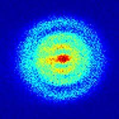

Material de interés
En esta sección, encontrarás material de interés relacionado con el desarrollo web, la programación y la tecnología en general. Aquí compartiré tutoriales, artículos, libros y recursos que considero útiles para aprender y mejorar tus habilidades como desarrollador. ¡Espero que te sea de ayuda!
Videos de YouTube
En esta sección, encontrarás una selección de videos de YouTube que considero interesantes y útiles para aprender sobre desarrollo web, programación y tecnología en general.
-
Curso de Python para principiantes
-
Curso de C++ para principiantes
-
Curso de C para principiantes
-
Curso de JavaScript para principiantes
-
Curso de Java para principiantes
Enlaces de interés
En esta sección, encontrarás enlaces a repositorios de GitHub relacionados con la robótica y la inteligencia artificial. Estos repositorios contienen código fuente, tutoriales y recursos útiles para aprender y desarrollar proyectos en estas áreas.
-
TensorFlow
Repositorio: tensorflow/tensorflow
Descripción: Una biblioteca de código abierto para el aprendizaje automático y la inteligencia artificial. -
PyTorch
Repositorio: pytorch/pytorch
Descripción: Una biblioteca de código abierto para el aprendizaje automático y la inteligencia artificial. -
ROS (Robot Operating System)
Repositorio: ros/ros
Descripción: Una biblioteca de código abierto para el aprendizaje automático y la inteligencia artificial. -
OpenAI Gymnasium
Repositorio: Farama-Foundation/Gymnasium
Descripción: Una biblioteca de código abierto para el aprendizaje automático y la inteligencia artificial. -
AirSim
Repositorio: microsoft/AirSim
Descripción: Una biblioteca de código abierto para el aprendizaje automático y la inteligencia artificial. -
YOLO (You Only Look Once)
Repositorio: pjreddie/darknet
Descripción: Una biblioteca de código abierto para el aprendizaje automático y la inteligencia artificial. -
DeepMind Lab
Repositorio: google-deepmind/lab
Descripción: Una biblioteca de código abierto para el aprendizaje automático y la inteligencia artificial. -
FastAI:
Repositorio: fastai/fastai
Descripción: Una biblioteca de código abierto para el aprendizaje automático y la inteligencia artificial. -
OpenCV:
Repositorio: opencv/opencv
Descripción: Una biblioteca de código abierto para el aprendizaje automático y la inteligencia artificial. -
Robotic Operating System 2 (ROS 2)
Repositorio: ros2/ros2
Descripción: Una biblioteca de código abierto para el aprendizaje automático y la inteligencia artificial. -
Hector Quadrotor
Repositorio: tu-darmstadt-ros-pkg/hector_quadrotor
Descripción: Una biblioteca de código abierto para desarrollar drones y sistemas de control de vuelo. -
PX4-Autopilot
Repositorio: PX4/PX4-Autopilot
Descripción: Una de los mejores repositorios que puedes encontrar para el desarrollo de drones y sistemas de control de vuelo.
Imágenes de interés
En esta sección, encontrarás una selección de imágenes que en lo personal me causan mucho impacto.
-
Lenna
Esta imagen es un clásico en el procesamiento de imágenes y la visión por computadora. Fue tomada en 1973 por el fotógrafo Dwight Hooker y es conocida como "Lenna" o "Lena".
-
Primera fotografía confirmada de un hoyo negro
La primera fotografía de un agujero negro fue capturada por el Event Horizon Telescope (EHT), un proyecto internacional colaborativo que involucra múltiples telescopios de radiotelescopio alrededor del mundo. La imagen fue publicada el 10 de abril de 2019 y muestra el agujero negro ubicado en el centro de la galaxia M87, a unos 55 millones de años luz de la Tierra.
-
Primera fotografía confirmada de un átomo
La primera imagen confirmada de un átomo fue obtenida en 2020 utilizando un microscopio de efecto túnel (STM, por sus siglas en inglés). El ángulo específico y el tipo de imagen capturada mostraron el arreglo preciso de átomos en una superficie.
